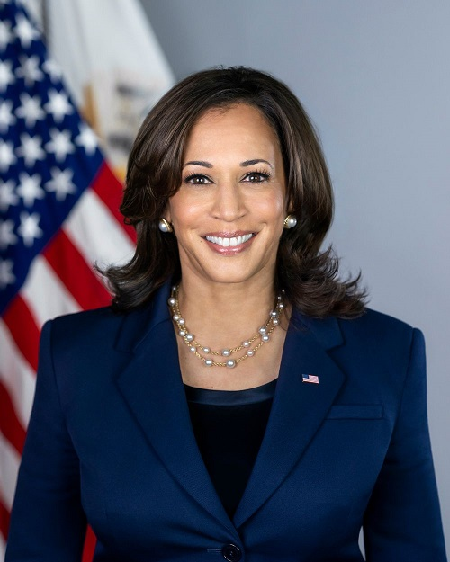

São poucas as mulheres que tentaram concorrer ao cargo de presidente ou vice-presidente dos Estados Unidos. Quem ocupa o lugar na história de primeira mulher negra a fazê-lo é Shirley Chisholm, também primeira mulher negra eleita ao Congresso (eleita por sete mandatos, entre 1969 e 1983). Ela concorreu à nomeação do partido democrata à Casa Branca em 1972, mas não foi escolhida.
Nascida de pais imigrantes (uma mãe indiana e um pai jamaicano) em Oakland, na Califórnia, Harris foi criada majoritariamente pela mãe, pesquisadora de câncer e ativista de direitos civis. Os pais se divorciaram quando ela tinha sete anos e, quando tinha 12 anos, Harris se mudou com a mãe e a irmã mais nova, Maya, para Montreal, no Canadá.
Fonte: BBC